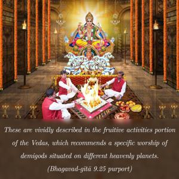
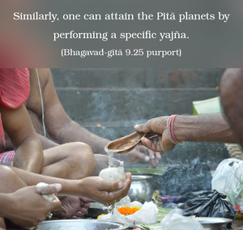

Those who worship the demigods will take birth among the demigods; those who worship the ancestors go to the ancestors; those who worship ghosts and spirits will take birth among such beings; and those who worship Me will live with Me.


If one has any desire to go to the moon, the sun or any other planet, one can attain the desired destination by following specific Vedic principles recommended for that purpose, such as the process technically known as Darśa-paurṇamāsa. These are vividly described in the fruitive activities portion of the Vedas, which recommends a specific worship of demigods situated on different heavenly planets. Similarly, one can attain the Pitā planets by performing a specific yajña. Similarly, one can go to many ghostly planets and become a Yakṣa, Rakṣa or Piśāca. Piśāca worship is called “black arts” or “black magic.” There are many men who practice this black art, and they think that it is spiritualism, but such activities are completely materialistic. Similarly, a pure devotee, who worships the Supreme Personality of Godhead only, achieves the planets of Vaikuṇṭha and Kṛṣṇaloka without a doubt. It is very easy to understand through this important verse that if by simply worshiping the demigods one can achieve the heavenly planets, or by worshiping the Pitās achieve the Pitā planets, or by practicing the black arts achieve the ghostly planets, why can the pure devotee not achieve the planet of Kṛṣṇa or Viṣṇu? Unfortunately many people have no information of these sublime planets where Kṛṣṇa and Viṣṇu live, and because they do not know of them they fall down. Even the impersonalists fall down from the brahma-jyotir. The Kṛṣṇa consciousness movement is therefore distributing sublime information to the entire human society to the effect that by simply chanting the Hare Kṛṣṇa mantra one can become perfect in this life and go back home, back to Godhead.